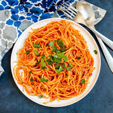

Perfect Pasta Recipe

A Nice Plate of Pasta
This delicacy is a perfect blend of finesse and expertise, it's an Italian
perfection prepared in the remote part of Africa in Jos, Nigeria. A blend of
an array of ingredients to generate a mouth-watering experience, follow me
while we succintly describe the process of creation.
INGREDIENTS
- 1 Satchet of spaghetti
- 6 pieces of tomatoes
- 2 pieces of onions
- 5 pieces of pepper
- 3 pieces of spring onions
- 1 satchet of tomato paste
- 1 piece of smoked fish
- 6 pieces of maggi cubes
- Chopped carrot and green beans
- Groundnut oil
- Soy sauce
- Salt
- Water
STEPS
- Put a bowl of water in the pot and let it heat up for 2mins
- Break the spaghetti into the pot and cover for 7mins
- Sieve content of pot and cover
- While that happens, cut the onions and spring onions blend the tomatoes and pepper
- Prepare the fish, take out all the bones
- Wash the chopped carrot and green beans and boil
- Boil the blended tomatoes and pepper until water is dried up
- Put a pot on the cooker at a low temperature, add groundnut oil and let fry for 15secs
- Add chopped onions to fry and immediately add blended tomatoes and peper
- Add tomato paste to fry
- Add fish to fry
- Add cubes of maggi
- Add a small quantity of water
- Add a small quantity of salt and let it simmer for 1min
- Add spaghetti, turn and let cook for 6-10mins
- Spread chopped carrot and green beans and spring onions on it on spaghetti at 3mins